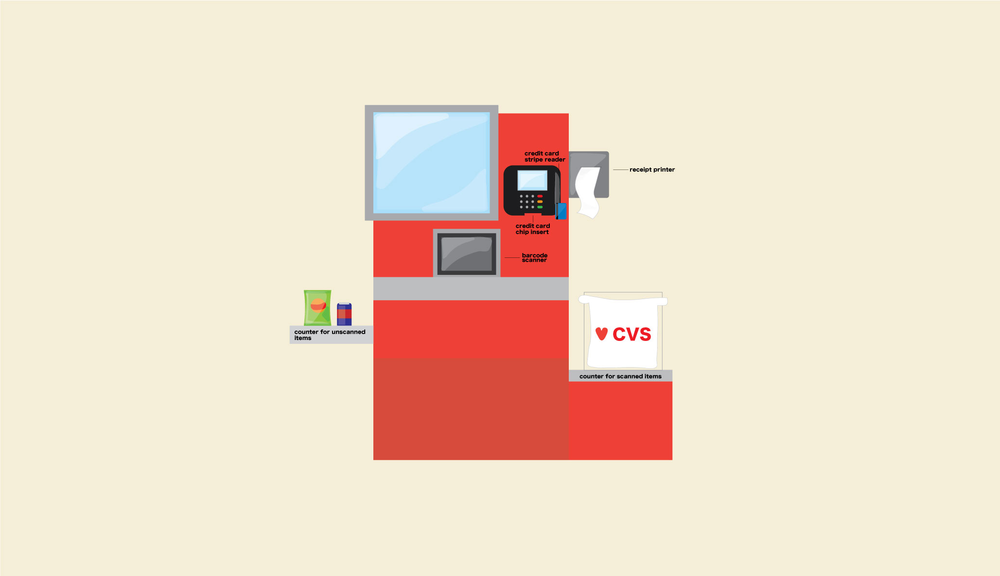
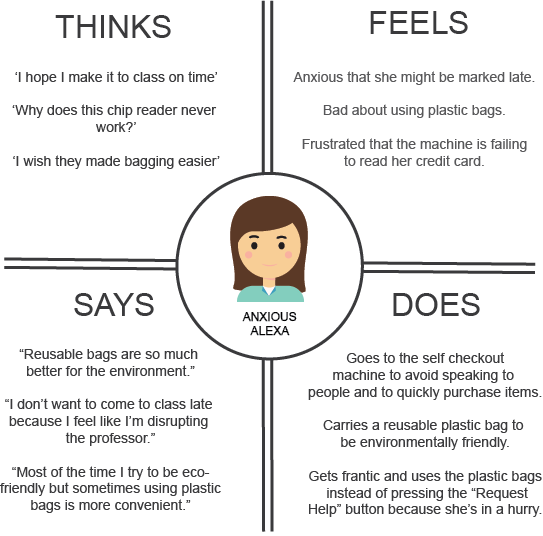
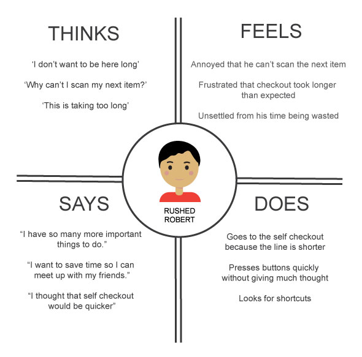

Self Checkout Machines: An Analysis of User Interaction

Context
In this project for CSCI 1300: User Interfaces and User Experiences,
taught by
Jeff Huang, we
were asked to choose one interface we have interacted with and
analyzing it using concepts of mental models and personas. My partner
for this project was Kate Atschinow, and we chose to analyze the self
checkout machine.
Description
The self checkout machine is an alternative for customers to purchase
items as opposed to going up to a traditional cashier. It helps to
shorten checkout lanes and reduce wait times. Customers scan their
items and pay using their preferred method of payment, usually cash or
credit, but the machines at the local CVS do not accept cash. The self
checkout machine contains four main components: the touchscreen
display, item scanner, credit card reader, and bagging area. Customers
scan each item barcode, place the item in the bag, which is verified
by weight against previously stored information, press the appropriate
buttons touchscreen display, and then make their payment via their
preferred method.
Behavioral Observation
While observing customers, we noticed that the line for the self
checkout was much longer than that for the cashier. After one customer
finished bagging and walked away, the next person in line would walk
up to the machine. For the most part, users were able to go through
the checkout process efficiently. We observed customers’ interactions
with using the self checkout machine and came up with a list of
observations about customer behavior and attitudes while using self
checkout.
- One customer had to request for help when the machine was unable to process one of his items, and he had to wait around until a staff member came to help him.
- Many customers went up to the self checkout with a friend and the friend would sometimes assist in pressing the correct buttons.
- Several customers clicked the “Skip Bagging” option, especially when their items were small, and did not place their items on the scale.
User Interviews
Do you prefer self checkout or going to the cashier?
-
User 1: I prefer self checkout.
-
User 2: Self checkout
What are some reasons you prefer one over the other?
-
User 1: Because I don’t want to interact with the cashier, and I
feel like it (the cashier) definitely takes more time.
-
User 2: The self-checkout usually has a faster line and I don’t have
to talk to anyone.
How likely are you to use the self checkout machine as opposed to
going to the cashier?
-
User 1: I’ll use the self checkout all the time unless I have too
many items or there’s a huge line for the self checkout
-
User 2: Very likely. I only use the cashier when I’m using cash or a
machine isn’t working.
What do you think can be improved with the user interface of the self
checkout machine?
-
User 1: I feel like it’s already pretty straight forward but
sometimes the scanning is too sensitive so then it’ll scan your item
twice. And then other times if you have too light of an object, like
let’s say you bought nail polish and you put it down in the bag it
won’t detect that you have it in the bag so it’ll keep waiting for
you to put it in the bag. But then you can just say “skip bagging”
and then scan the next item.
-
User 2: After I scan an item it doesn’t always register when I put
it down in a bag. I’ve also had problems with it reading my credit
card when I put the chip in. Also sometimes it takes multiple tries
for the scanner to scan my item.
Are there any parts of the interface that you find confusing?
-
User 1: No, but also I’m not someone who uses coupons. But if I were
to have coupons I would be confused as to how to use it. Normally
it’s pretty straight forward. I just use my credit card.
-
User 2: When I bring my own bag or don’t need a bag sometimes I
don’t know if I should press the button for using my own bag or skip
bagging because I have had to press both before.
If you could change any features of the design, how would you?
-
User 1: I think the Amazon concept is nice, where you can just take
the item and leave. It’s convenient that it’s checkout free and you
just get charged through your Amazon account. But some people think
it feels like shoplifting.
-
User 2: I would make it more clear exactly where you should put the
item you’re scanning so you don’t have to just wave it around. Also
make it easier to choose your own bag or skip bagging.
How does this self checkout machine compare to self checkout machines
you have used in other stores?
-
User 1: The only other one I’ve used is Target and it’s exactly the
same. There’s no discrepancy. I’m pretty sure it’s the same exact
interface as well.
-
User 2: The only difference I’ve noticed is that the other ones have
a security monitor which doesn’t necessarily affect my experience
with it.
Most people that we observed using the self checkout machine were college students, mostly because CVS is located right by Brown University. This particular sample is not a good representation of the range of people that may be using self checkout machines in other CVS stores, where there are likely to be more customers who are older. Older customers may have less experience with technology and find it more confusing than the population we observed. However, the people we observed were representative of the people who frequent the CVS on Thayer Street. We went on different times of the day, and as expected, mostly saw students along with a few Providence residents who are not students.
Mental Models and Personas
Mental Model #1:
The user selects “Use my own bag” and then places the item in their
reusable bag after scanning. However, an error occurs and the machine
does not let them scan their next item. The user does not press the
“Skip Bagging” option because they want to place their items in a bag.
They cannot figure out what is going wrong, so they press “Request
Help”. The user’s mental model blocks the user from identifying a way
to resolving the issue, which is likely to have been caused by the
weight detector not being able to detect the item on the scale. The
user does not understand that “skip bagging” would help them bypass
the weight detector error, and they do not click on it because they
want to place their items in a bag. Because of this, the user becomes
stressed because they are not able to identify why they cannot use
their reusable bag.

Mental Model #2:
The user scans the item and places it in the plastic bag. The weight
detector does not detect that an item has been placed there, and the
user is not able to scan the next item. They notice that there is a
“Skip Bagging” option so they press it, thinking that the items are
small enough to carry without a bag and that maybe the button will
help skip past the weight detector not being able to detect the item
and override the scale’s inability to detect items whose weights are
out of range. They are then able to move onto scanning their next
item. The user’s mental model of the self checkout machine was that
the “skip bagging” option would allow them to bypass the weight
detector, so they were able to resolve their issue and purchase their
item quickly, though initially with slight confusion due to not being
able to scan the next item.

Rushed Robert is a student at Brown University who likes to use his
time efficiently. He always looks for a way to do things as quickly as
possible so he can keep up with his busy lifestyle. He is constantly
juggling his work from his engineering classes, soccer practice, and
hanging out with his friends. With the goal of saving time, he chooses
self checkout because the line is shorter. He uses the plastic bags
for the sake of convenience because he doesn’t want to have to carry
around a reusable bag on top of his athletic gear. His ability to
problem solve allows him to identify the cause of the machine
malfunction. Rushed Robert is like many students and wants to make his
purchases and leave the store as quickly as possible with minimal
interactions with other people in the store.
Storyboard
.jpg)
Conclusion
Throughout this process of conducting behavioral observations and user
interviews, we were able to gauge customers’ general feelings
self-checkout. Based on our observations, more customers preferred
using the self-checkout machine. Though it seemed to be the more
popular option for purchasing items as compared to going up to an
employee, there were also issues that customers faced such as the
machine not being able to detect scanned items that were outside of
the weight range. It was helpful to think of mental models and
personas to better understand how different users might feel about the
process of self-checkout and how they reacted when an issue occurred.
Other Projects